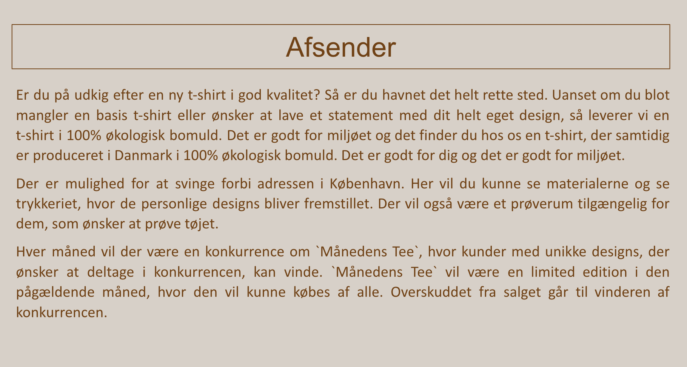
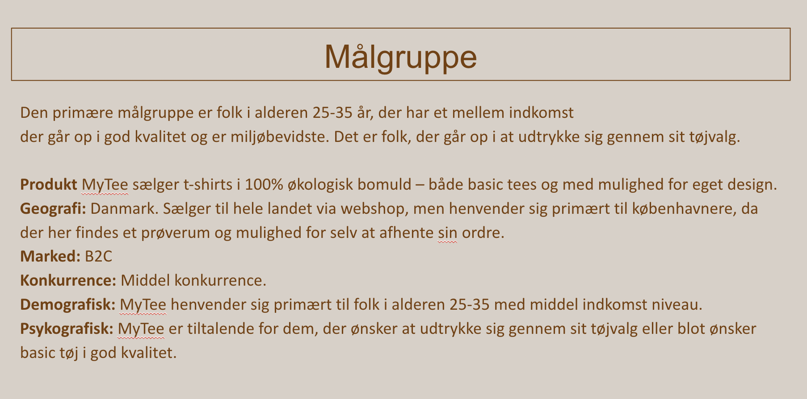
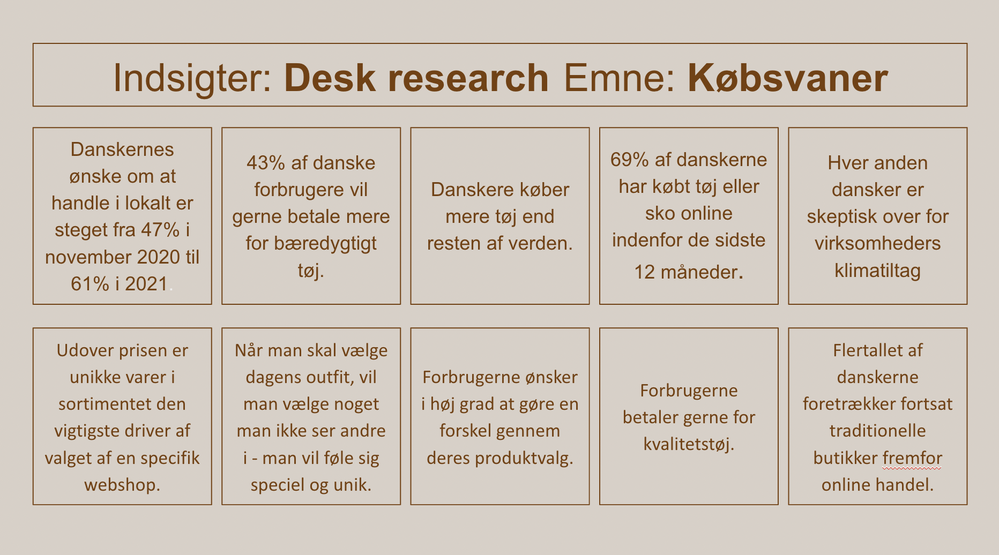
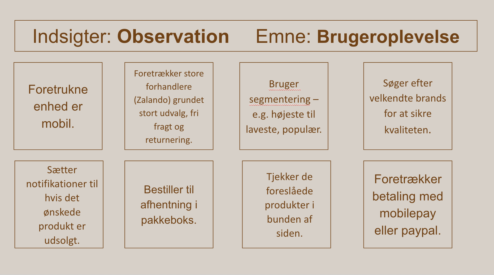
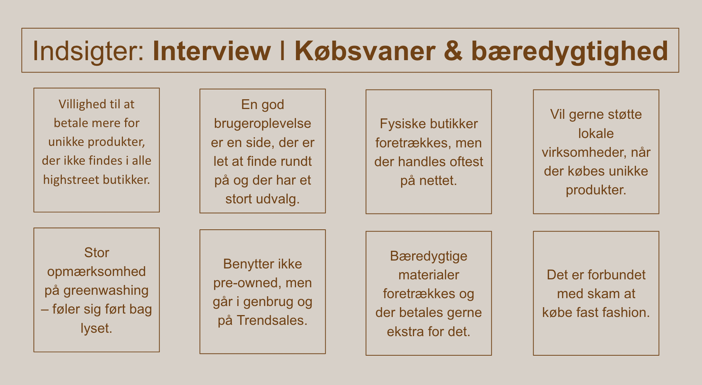

Portfolie
Velkommen til min portfolie. Her findes et overblik over produkterne fra de 6 temaer, som jeg har produceret på første semester af multimediedesign på KEA.
Tema 2: Grundlæggende web
Gennem temaet grundlæggende web blev vi introduceret til de basale værktøjer,
der er grundlaget for de nødvendige
redskaber for en multimediedesigner.
Vi blev introduceret til grundlæggende html, css og designkonventioner, der bruges ved
udvikling af digitale
brugergrænseflader, digital indholdsproduktion, kommunikation og responsivt webdesign.
Temaets to opgaver består af studiestartsprøven og emnesite.
Emnesite: En passion for syltede rødløg

Processen
Mit emnesite tager udgangspunkt i min passion for syltede rødløg. Websitet består af en
forside og to undersider, der
handler om henholdsvis syltens historien og opskriften. Websitet tager udgangspunkt i stilarten 70er
retro. Det fremgår gennem brug af stærke kontrastfarver, retro-fonte og
tekstur ved hjælp af baggrund og billeder.
Det var første gang jeg prøvede Illustrator. Youtube tutorials og øvelser fra undervisningen var derfor
noget af det,
som jeg brugte utroligt meget tid på.
Havde jeg haft mere tid, havde jeg sørget for at inkorporere designet med syltede rødløg på
undersiderne.
Moodboard

Styletile

Designprocess i Illustrator

Wireframe forside

Mockup til forside

Studiestartsprøven
Under studiestartsprøven fandt jeg både html og css udfordrende, da jeg ikke
tidligere har erfaring med at kode. Jeg
benyttede min tildelte studiegruppe og tutorerne til hjælp.
Jeg forbedrede mig
derudover gennem øvelser fra
undervisningen og freeCodeCamp.

Tema 3: Grundlæggende UX
Gennem temaet grundlæggende UX blev vi introduceret til de basale værktøjer, teorier og værktøjer, der bliver benyttet under udviklingen af digitale brugergrænseflader. Det foregik ved analyse af eksisterende hjemmesider, desk- og observation research, survey, interviews, fastsættelse af målgruppe og usp. UX er et hovedelement i udvikling af brugergrænseflader, da god UX skal sikre kunder får en god brugeroplevelse, der øger sandsynlighed for at brugere benytter den pågældende side – og derved kan blive loyale kunder. Research og test af prototyperne på potentielle kunder er derfor vigtigt, da designvalg derved baseres på konkrete indsigter og ikke en mavefornemmelse. Vi benyttede viden fra temaet i udvikling af prototype til en webshop, der sælger t-shirts.
MyTee

Processen
Temaet startede med idéudvikling samt beskrivelse af afsender og målgruppe. Vi foretog derefter research for at kunne træffe valg på konkrete indsigter fremfor mavefornemmelser. Vi blev desuden introduceret til flere forskellige sketch teknikker – crazy 8 og lightning round – som jeg fandt ret gode, når man skal tvinge sig selv til at få nye idéer til brugergrænseflader. Jeg blev desværre ramt af sygdom og fik derfor ikke udviklet en endelig prototype. Min XD-skills kan ses i min prototype, der findes under tema 6.
Moodboard

Afsender
Målgruppe
Indsigter Desk Research
Indsigter Observation Research
Indsigter Interview
Tema 4: Grundlæggende Animation
I temaet grundlæggende animation blev vi introduceret til javascript.
Javascript er en vigtig del i udviklingen digitale
brugergrænseflader. Det gør det muligt at skabe interaktive elementer, der kan give en bedre
brugeroplevelse og henlede
en brugers opmærksomhed på specifikke elementer.
Gennem temaet kombinerede vi javascript med færdigheder fra tidligere
temaer; css, designkonventioner, beskrivelse af stilarter.
Temaets opgave var, at udvikle og kode et spil med javascript, css og Illustrator.
Spil Morgenmadsvalget

Processen
Jeg startede med idéudvikling, hvor jeg blev inspireret af folketingsvalget og derfor den
store uddeling af morgenmad og
kaffe, der på daværende tidspunkt var aktuelt.
Stilarten for spilelementerne er kawaii. Kawaii kendetegnes ved baby-bias og bouba-effekten, der
kommer til udtryk
gennem de store hoveder på min karakter og store blanke øjne på mine spilelementer.
Gennem skitser og aktivitetsdiagrammet besluttede jeg hvilke spil mechanics, der skulle være i mit spil.
Statemachinediagrammet blev udviklet, så der kunne kodes efter det – statemachinediagrammet er altså
javascripts form
for layoutdiagram.
Javascript var utroligt udfordrende for mig og jeg brugte derfor også meget tid på kodning af spillet.
Jeg forsøgte at
øge min forståelse for javascript gennem øvelser fra undervisningen samt at lave noter til mig selv i vs
code.
Skitse spilmechanics

Design af spilelementer

Aktivitetsdiagram

Statemachinediagram

Tema 5: Grundlæggende Indhold
I temaet grundlæggende indhold blev vi introduceret til videoproduktion. Vi fik kundskaber indenfor arbejdet med forberedelse til optagelse, optagelse og postproduktion. Vi blev igennem de færdigheder, vi har lært i temaet i stand til at formidle indhold gennem video. Temaets opgaver indebærer en pilotsite, hvor vi har udviklet et site udfra et interview med en person med en passion. Temaets anden opgave består af et re-design af en hjemmeside for en eksisterende hjemmeside.Vi blev derfor også introduceret til værktøjer som Trello og SCRUM, der er behjælpelig med at styre en proces med flere involveret.
Re-design af Nova Møbler

Processen
I min gruppe valgte vi at redesigne Nova Møblers hjemmeside. Vi startede med at oprette en
trello for at danne overblik
over processen. Vi oprettede samtidigt et procesdokument i google docs, hvor alle kunne skrive deres
inputs og
kommentere.
Jeg var ansvarlig for at definere målgruppe og foretage desk- og observations research.
Jeg redesignede forsiden. Vi lavede hver i sær en wireframe og prototype, hvorefter vi
fremlagde det
for hinanden for at sikre, at der var genkendelighed i designet på alle sider og alle var enige om
designprocessen.
Prototype forside

Wireframe

Trello

Eksisterende forside

Styletyle

Pilotsite
Til pilotvideoen interviewede jeg min veninde Alberte om hendes passion for
renovering af hendes lejlighed.
Inden jeg filmede, gjorde jeg mig nogle tanker om, hvilken stemning jeg ønskede at skabe med
videoen – både i forhold
til de spørgsmål jeg stillede og hvordan det skulle filmes. Jeg vil dog fremadrettet være mere
opmærksom på vigtigheden
af storyboard, da jeg efterfølgende kunne konstatere, at jeg ikke havde fået alle de klip, jeg
ønskede. Jeg ville gerne
have haft flere nærbilleder og været bedre til at få filmet flere vinkler.

Tema 6: Portfolie-eksamen
Til vores portfolie-eksamen er formålet at lave en portfolie-website, hvor vi skal demonstrere, at vi kan benytte teori, metode og de værktøjer, vi har lært i løbet af de tidligere temaer. Formålet er samtidigt at kunne reflektere over læring på de tidligere temaer.